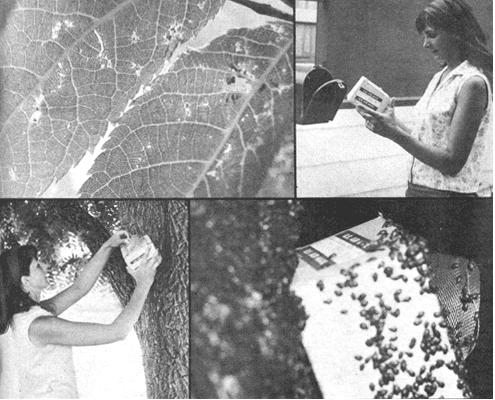

TOP LEFT: This is what the aphid-infested leaves on our black walnut tree looked like just two weeks after being drenched with Malathion. The little nests had returned immediately after a rainstorm washed away the foul-smelling poison . . . so we TOP RIGHT: placed an order with a California company for a half-pint of live ladybugs. The sturdy, well-ventilated container of predator insects arrived via air mail within two weeks. I removed them from the mailbox and stored them in the refrigerator to keep the ladybugs calm until evening. LEFT ABOVE: Toward sundown, I opened the box and placed it in the crotch of the old walnut tree. As dusk fell, I sprinkled the container and surrounding area with water to encourage the ladybugs to crawl out. RIGHT ABOVE: Aroused by the smell of water, the hungry and thirsty ladybirds clambered from the container during the night and spread throughout the branches of the walnut tree.